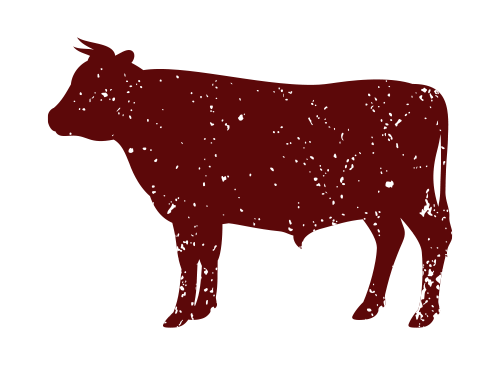
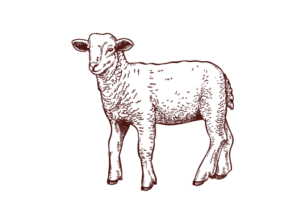
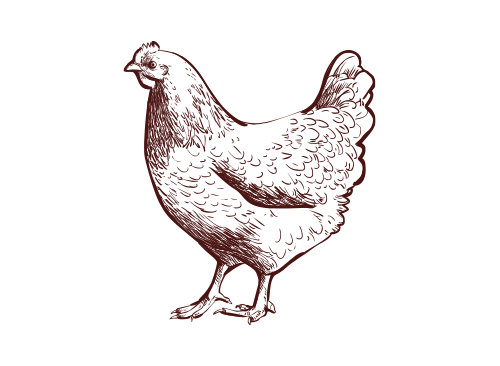
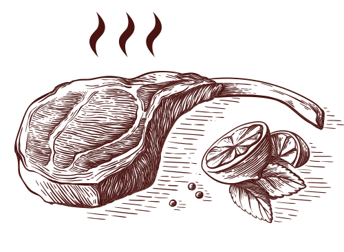
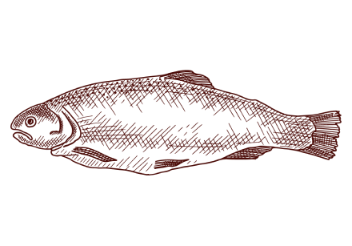
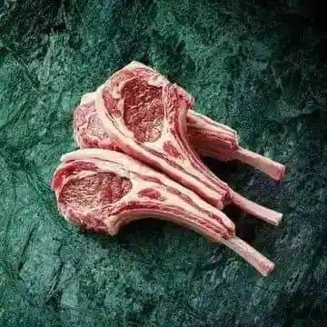
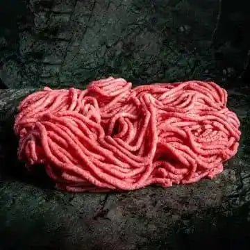

Classic Gourmet Fine Foods
Fine Foods. Exceptional Taste.
Discover premium cuts, gourmet ingredients and carefully selected foods for everyday meals and special occasions.
Discover premium cuts, gourmet ingredients and carefully selected foods for everyday meals and special occasions.

From premium beef to carefully sourced gourmet foods, every selection is chosen with quality in mind.

Indulge in exceptional Wagyu and premium ingredients selected for unforgettable dining.

Explore a complete range of premium foods for home chefs, restaurants and discerning food lovers.
Everything you need for a beautifully prepared meal, from premium cuts to gourmet pantry essentials.

Premium Angus, Wagyu and grass-fed selections.
Explore collection →
Tender cuts selected for exceptional flavour.
Explore collection →
Delicate milk-fed veal for refined cooking.
Explore collection →
Fresh and carefully sourced poultry.
Explore collection →
Ready-to-enjoy gourmet favourites.
Explore collection →
Premium seafood for everyday and special meals.
Explore collection →Spices, sauces and gourmet essentials.
Explore collection →Fine cheeses and cultured dairy products.
Explore collection →
Classic Gourmet Fine Foods is built around a simple idea: better ingredients make better meals. We source premium foods and present them with the care they deserve.
A curated selection of premium favourites inspired by the range on the original reference site.

